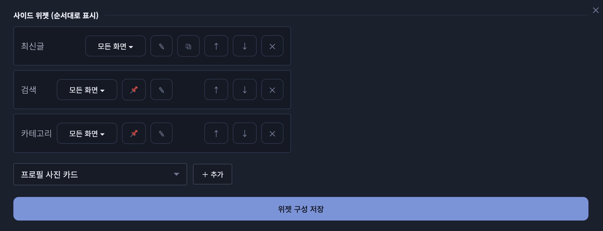

러브로그 · 위젯
위젯 공통 — 추가·편집·배치
꾸미기 → 위젯 구성에서 넣고, 편집은 ✎ 팝업에서, 마지막에 [위젯 구성 저장]을 꼭 누릅니다.
추가와 편집
- 꾸미기(✦) → 위젯 구성에서 위젯을 추가합니다.
- 목록의 ✎를 누르면 편집이 큰 팝업으로 열립니다. 닫아도 내용은 남습니다.
- [위젯 구성 저장]을 눌러야 홈에 반영됩니다. 내용이 빈 위젯은 방문자에게 안 보입니다.

사진 자리img/ll-widget-list.png배치
- PC에선 ⠿ 편집 모드에서 드래그로 기둥 사이·순서를 옮깁니다 — 카드 위쪽 절반에 놓으면 그 위, 아래쪽 절반이면 그 아래. ↑↓ 버튼으로도 이동.
- 모바일 순서는 따로 저장 — 폰으로 내 홈을 열면 위젯마다 ↑↓가 떠서 그 자리에서 정합니다(PC 배치는 안 바뀜).
- 📌 플로팅(PC 전용) — 목록의 📌를 누르면 위젯이 컬럼에서 빠져나와 화면 위에 뜹니다. 편집 모드에서 드래그로 배치(자동 저장). 폰·좁은 창에선 원래 자리로 돌아가고, 글 읽는 동안엔 비켜 줍니다.
표시 범위
목록 각 줄의 표시 버튼에서 「홈에서만 · PC에서만 · 꺼두기」를 체크로 조합합니다. 홈에서만+PC에서만을 함께 켜면 PC로 홈을 볼 때만 보입니다. 꺼두기는 설정을 보관한 채 잠시 감춤(꺼둔 채로도 순서·✎ 편집 가능).
모든 위젯에 있는 것
- 위젯 제목 — ✎ 맨 위 〈위젯 제목〉에서 머리 글자(SEARCH · D-DAY 등)를 바꿉니다. 제목 앞 기호(◈)는 테마·레이아웃에서.
- 🫧 투명 — 카드 배경·테두리 없이 내용만.
- 🔗 클릭하면 이동 — 위젯을 누르면 정한 카테고리·글·주소로 갑니다. 페어 프로필을 눌러 소개 글로 보내는 식으로. 위젯 안의 링크·버튼은 그대로 동작합니다.
- 카테고리 화면에선 왼쪽/오른쪽 — 글 목록 화면으로 넘어갔을 때 붙을 쪽.
- 스킨·글꼴·글자색·포인트색·크기 — 스킨이 있는 위젯은 ✎에서 고르고, 같은 자리에서 글꼴과 색을 위젯마다 따로 정합니다.
- ⧉ 복제 — 채팅로그·이미지·타임라인처럼 여러 개 두는 위젯은 목록의 ⧉로 설정을 통째로 복사.